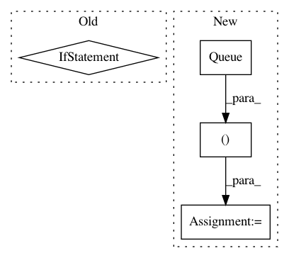

9a50d7bece2e09093f7eec251fc2be5736b131da,tests/keras/applications/applications_test.py,,test_densenet_variable_input_channels,#Any#Any#,352
Before Change
model = fun(weights=None, include_top=False, input_shape=input_shape)
assert model.output_shape == (None, None, None, dim)
input_shape = (4, None, None) if K.image_data_format() == "channels_first" else (None, None, 4)
model = fun(weights=None, include_top=False, input_shape=input_shape)
assert model.output_shape == (None, None, None, dim)
After Change
model = fun(weights=None, include_top=False, input_shape=input_shape)
queue.put(model.output_shape)
queue = Queue()
p = Process(target=target, args=(queue, (None, None, 1)))
p.start()
p.join()
assert not queue.empty(), "Model creation failed."
model_output_shape = queue.get_nowait()
assert model_output_shape == (None, None, None, dim)
p = Process(target=target, args=(queue, (None, None, 4)))
p.start()
p.join()
assert not queue.empty(), "Model creation failed."
model_output_shape = queue.get_nowait()
In pattern: SUPERPATTERN
Frequency: 3
Non-data size: 4
Instances
Project Name: keras-team/keras
Commit Name: 9a50d7bece2e09093f7eec251fc2be5736b131da
Time: 2018-01-09
Author: myutwo150@users.noreply.github.com
File Name: tests/keras/applications/applications_test.py
Class Name:
Method Name: test_densenet_variable_input_channels
Project Name: HazyResearch/fonduer
Commit Name: 6ca60969b6893268680d4386e2f22cdc3bc3c405
Time: 2018-09-05
Author: jrausch@inf.ethz.ch
File Name: src/fonduer/utils/udf.py
Class Name: UDFRunner
Method Name: apply_mt
Project Name: okfn-brasil/serenata-de-amor
Commit Name: 67fa4171fffad014ef7f072ef56426e52080fcb5
Time: 2016-11-10
Author: cuducos@gmail.com
File Name: src/fetch_suspicious_places.py
Class Name:
Method Name: search_suspicious_around_companies